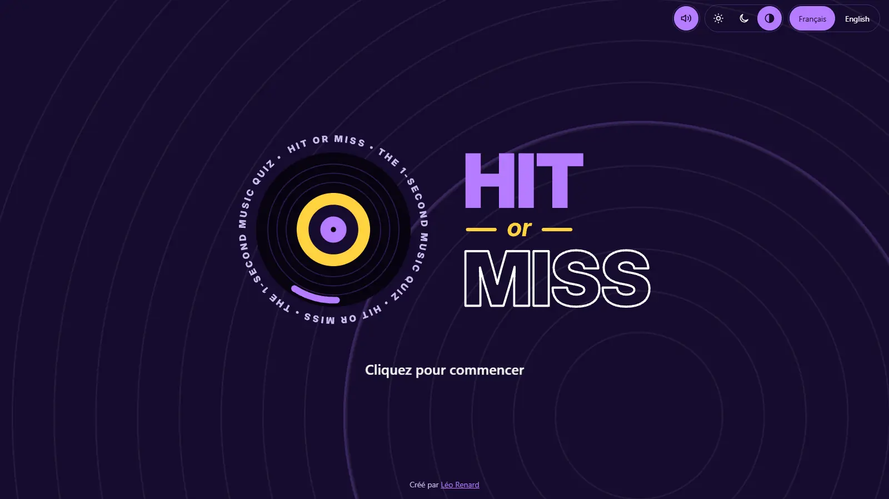
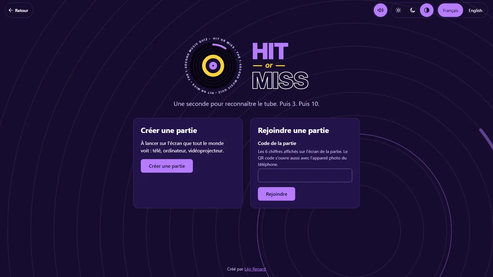
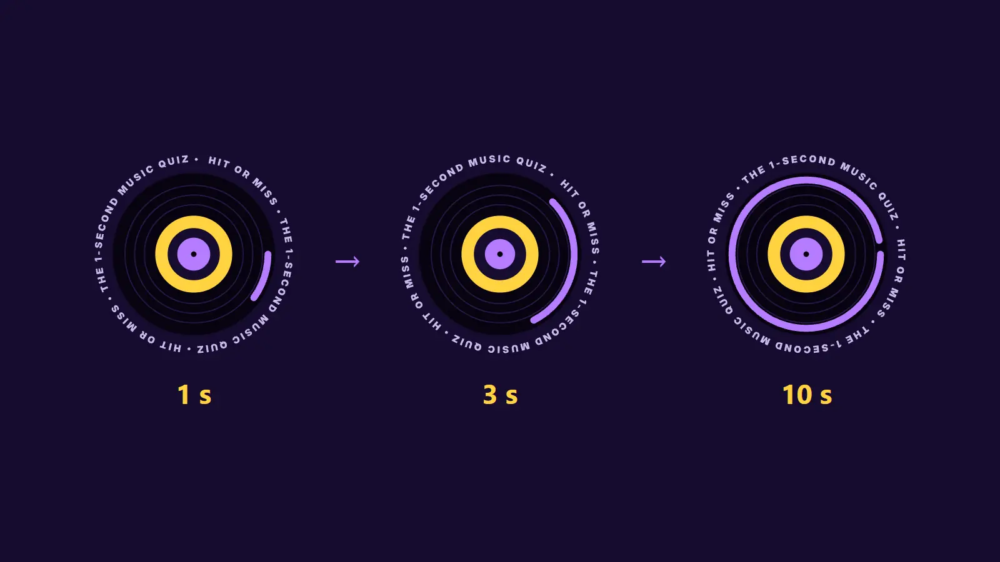
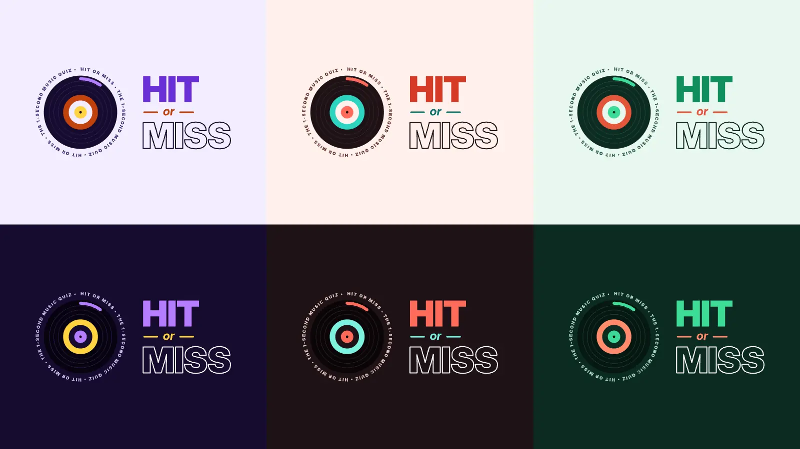
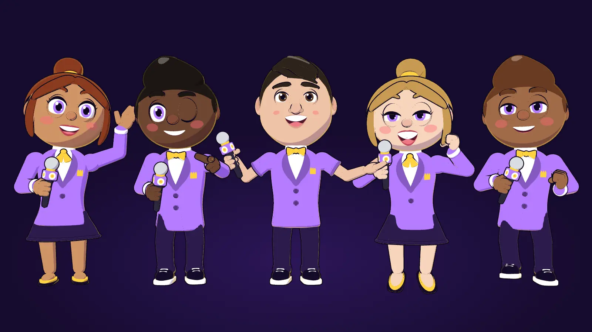

2026 · Conception et développement
Un quiz musical multijoueur pour les soirées : une seconde d’un morceau pour trouver le titre, puis trois, puis dix.

Hit or Miss est un jeu télévisé musical à jouer entre amis. À chaque manche, il faut reconnaître un morceau à partir d’un extrait d’une seconde, qui s’allonge à trois puis à dix secondes : plus la réponse est rapide, plus elle rapporte de points.
J’ai conçu et développé l’ensemble du projet, du moteur de jeu en temps réel à la bibliothèque musicale, jusqu’à sa mise en ligne.
Le jeu part de « Devine la chanson », auquel j’ai ajouté le multijoueur pour pouvoir y jouer en soirée. Un appareil principal sert d’écran à l’émission. Un téléphone peut servir de télécommande, pour passer les manches et valider à la main certaines réponses libres. Chaque joueur rejoint ensuite la partie en scannant un QR code ou en saisissant le code de la partie, sans créer de compte.

Un jeu doit répondre sans délai. J’ai choisi React pour son interface réactive, qui se met à jour dès qu’un joueur répond, avec Socket.IO pour transmettre en temps réel l’état de la partie à l’écran principal, à la télécommande et à chaque téléphone.
Pour l’identité, je suis parti de l’univers des jeux télévisés et des quiz musicaux. Le logo associe un disque vinyle au nom « HIT — or — MISS », et son animation de chargement reprend la mécanique du jeu : un arc s’allonge d’une à trois, puis à dix secondes pendant que le disque tourne.

Le logo se décline en trois identités complètes, violet, corail et menthe, chacune en version claire et sombre, avec favicons et écran de présentation. L’identité se choisit à la compilation, et les couleurs du texte et des graphiques ont été ajustées pour rester lisibles, y compris par les personnes daltoniennes.

Pour incarner l’émission, j’ai imaginé des présentateurs en 3D. Un animateur et une animatrice partagent le même squelette et les mêmes animations, avec cinq teintes de peau et cinq couleurs de cheveux, et l’un d’eux est tiré au sort à chaque partie. S’y ajoute mon sosie, modelé d’après des photos.
Ils sont entièrement générés par code, en style cartoon, sans modèle 3D à télécharger : ils saluent, présentent chaque extrait, dansent pendant l’écoute et réagissent aux bonnes comme aux mauvaises réponses. Décoratifs, ils ne font que doubler ce que le texte et les lecteurs d’écran annoncent déjà.
